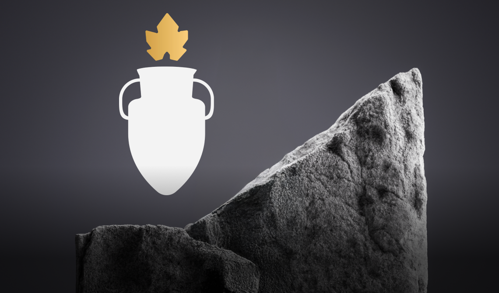

Découvrez notre vaste gamme de vin naturel authentiques et vivants, créés avec passion et respect du terroir.
Pinot Noir-Gamay
Ce Pinot Noir-Gamay naturel séduit par sa robe rubis brillante et ses arômes de fruits rouges frais, relevés d'une touche d'épices. En bouche, il est équilibré et délicat, idéal pour accompagner viandes blanches et fromages.
Plus d’informations
Tous nos vins
Nouveau!

Philosophie
Notre vin naturel est issu de raisins bio, sans additifs ni intrants chimiques, et avec très peu de sulfites. Il reflète le caractère pur du terroir et respecte des pratiques durables.
Plus d’informations
Notre Vigneronne
Ariane Dupont crée des vins naturels et vivants, reflets purs de son terroir. Sur son domaine en biodynamie, elle cultive avec passion et sans additifs pour révéler la richesse des cépages.
Plus d’informations
Réservez maintenant